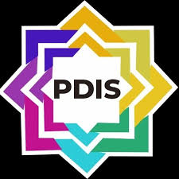
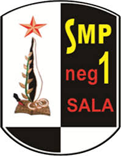
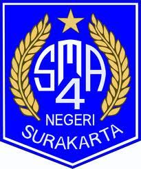

Putra Darma Islamic School
Jl. Rw. Pisang No.19, Sumberjaya, Kec. Tambun Sel., Kabupaten Bekasi, Jawa Barat 17510
SDN Kleco 1 Surakarta

Jl. Slamet Riyadi No.554, Kerten, Laweyan, KOta Surakarta, Jawa Tengah 57143
SMPN 1 Surakarta
Jl. MT Haryono No.4, Manahan, Kec. Banjarsari, Kota Surakarta, Jawa Tengah 57139
SMAN 4 Surakarta
Jl. Adi Sucipto No.1, Manahan, Kec. Banjarsari, Kota Surakarta, Jawa Tengah 57139
Institut teknologi Sepuluh Nopember

Keputih, Sukolilo, Surabaya, East Java 60117